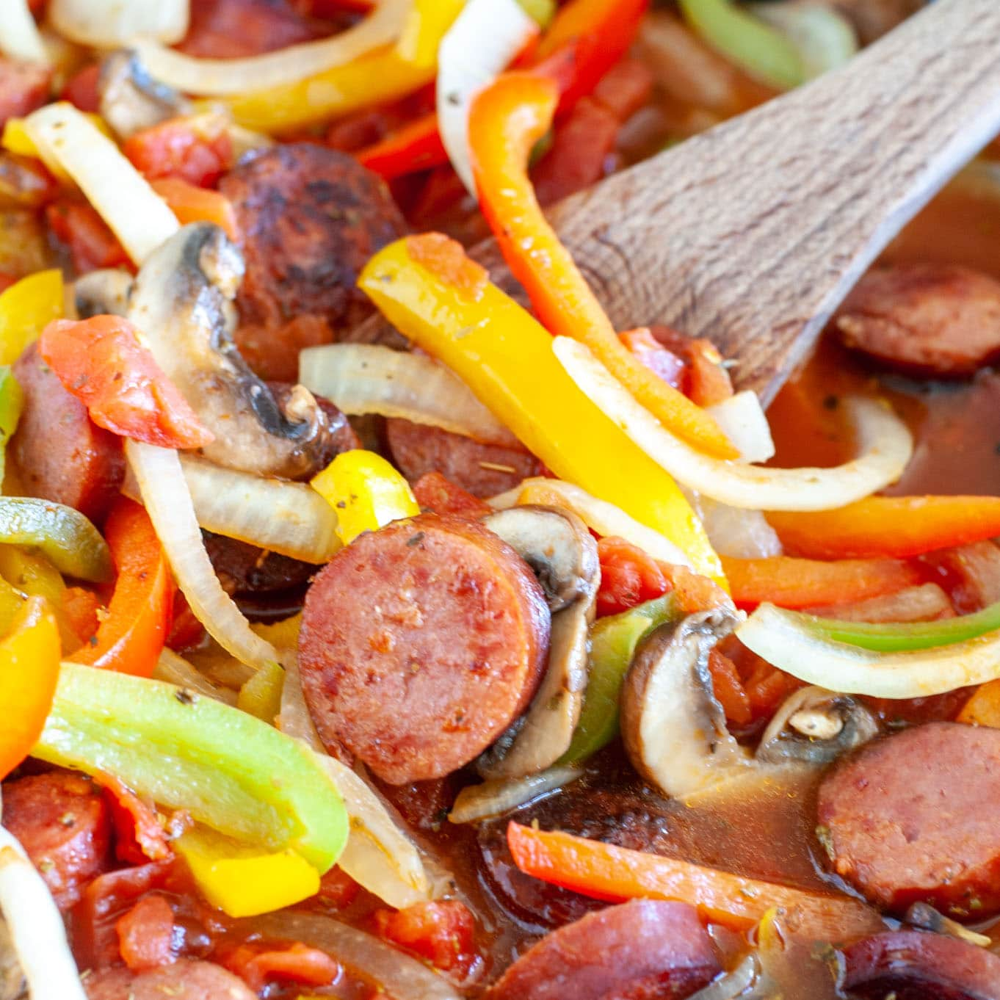

Polish Sausage Skillet

Description
If you are in the market for an easy and flavorful dinner then this dish is for you. This polish sausage recipe has become one of our go-to dinners during the school week because it can be made in less than 30 minutes with few ingredients.
Sausage and peppers is dish that can be served in many ways. Try serving over rice, cauliflower rice, pasta, spaghetti squash or even on toast. Use turkey kielbasa and zoodles or cauliflower rice for a lower calorie option.
Ingredients
- Polish sausage
- Olive Oil
- Bell Peppers
- Onions and mushrooms
- Chicken Broth
Directions
- Slice sausage into 1/2 inch rounds. Cut peppers, onions and mushrooms. /li>
- Cook: Add olive oil to pan and heat over medium heat. Add in polish sausage and cook until starting to brown. Remove sausage from pan and set aside.
- Put peppers, onions and mushrooms into same pan and cook until starting to soften, about 5 minutes.
- Stir in chicken broth, seasoning and diced tomatoes. Bring to a boil and let cook 5 more minutes.
- Serve: Serve warm.